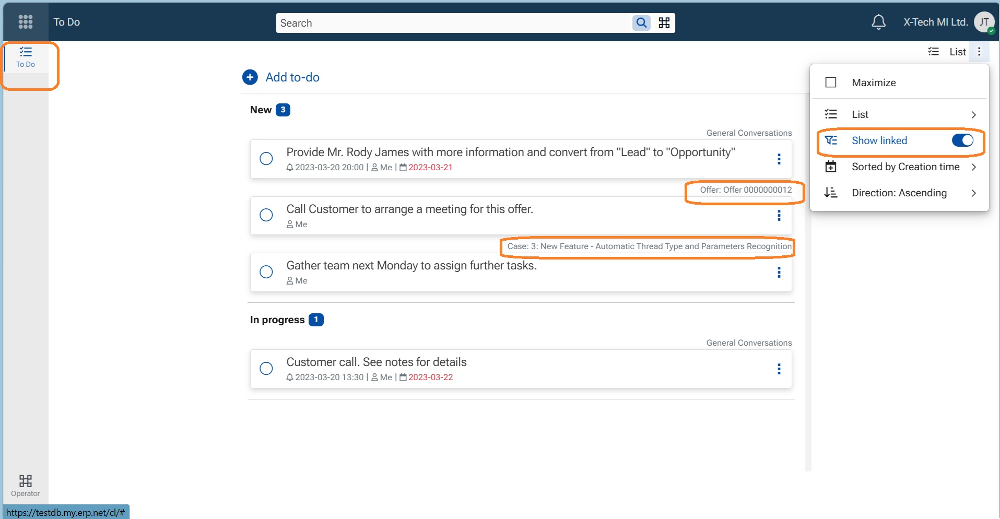

My Apps
My Apps is the collective name for a suite of interactive, standalone applications within the ERP.net Web Client. They provide a personalized workspace where users can access aggregated and complex data in a simple, intuitive way. As a core extension of the Social ERP concept, My Apps enhances productivity, collaboration, and everyday efficiency across the organization.
The My module consists of several interconnected applications—each functioning independently while remaining fully compatible with the rest of the ERP.net platform. These include:Groups, Dashboard, Notifications, Search, Calendar, Timeline, Tiles, Favorites, To Do, Documents, AI Assistant and Folders
In the sections that follow, you will find all new features and improvements introduced for these applications in ERP.net version 26.2.
Notable features
1. 📢 ToDo Application – Change in Concept and Default Behavior
We have updated the ToDo application concept so that all available tasks are now shown by default when opening the ToDo app.
Previously, tasks that were linked to records in the system (documents, activities, cases, etc.) were not displayed initially and required manually switching ON the Show linked toggle.
Why this change?
We reconsidered the overall concept of ToDo tasks:
- ToDo tasks are “out-of-bound” of the assignment of their main document
- A ToDo task represents work you need to do regardless of whether the main document itself is assigned to you
As a result, the Show linked toggle is now ON by default, and all tasks are visible when opening the ToDo application.
Configuration
If you prefer not to see linked tasks in the ToDo application, you can control this behavior using the configuration key:
/ToDo/ShowLinked https://docs.erp.net/tech/reference/config-options-reference.html#73-todoshowlinked
Note
ToDos displayed in the side panel of a record are always visible, as they are inherently linked to that record.
ToDos displayed in Groups (tab ToDo) are also always visible and are independent from the ToDo application view.
Topright corner of each ToDo indicates the host record and is a link to it.
The swith in ToDo App menu shows/hides temporarily the Tasks, its position does not control the value of the config key!

Other features
follow